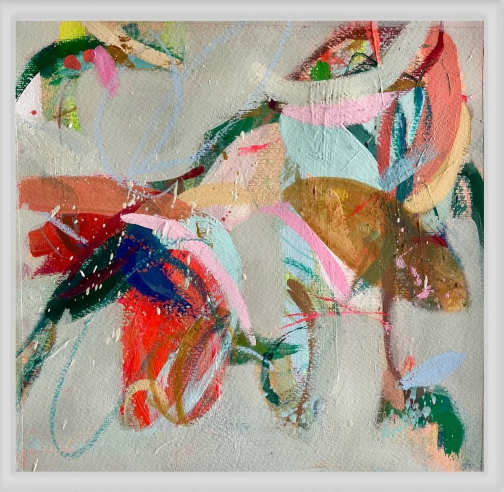
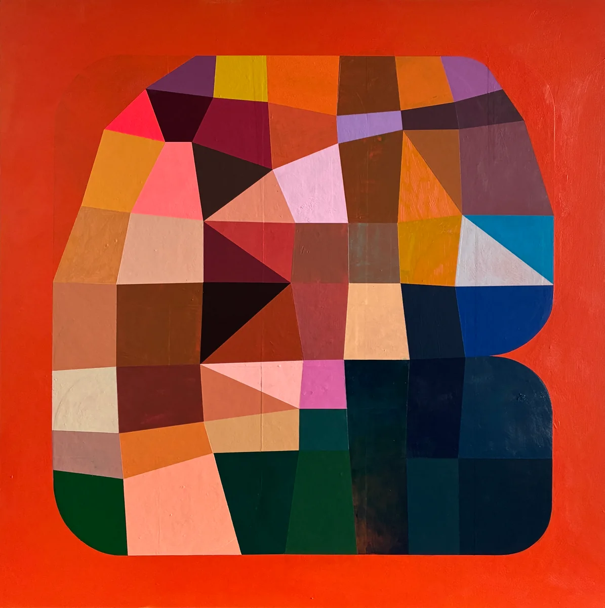
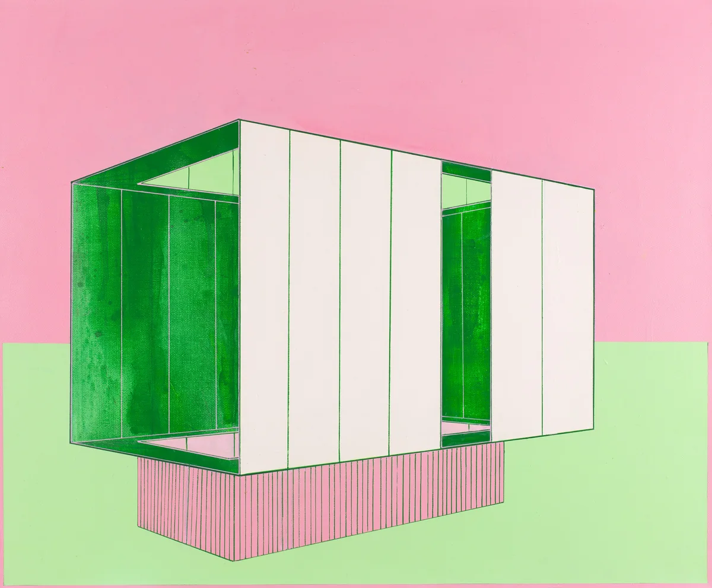

PlotArt · Explore the work
Abstract & contemporary
Irish art.
Colour, shape, surface and gesture. Discover work that gives you something new to notice, and meet the artists behind it.
From the published collection
A starting point for discovery.
A selection from the available abstract and contemporary work published on PlotArt. Each link opens the artist-supplied details, dimensions, price and enquiry route.

Blowout Series II #1
Monoprint/Acrylic/Lacquer · 140 × 100 cm
€10,000

Uisce Salach I
Anna Marie Savage · Photograph: Simon Mills
Oil and Oil Bar on Canvas · 100 × 70 × 3.5 cm
€2,155

Walk of life
Mixed media, raw silk & oil on canvas · 160 × 120 × 4 cm
€6,200

Humming Light
Acrylic on Wood Panel · 33 × 33 × 5 cm
€495

'Simply Put, Life is Complex'
Oil on linen · 230 × 180 × 2.5 cm
€8,000

“What we Carry”
Mixed Media · 80 × 80 × 3 cm
€750

Modern Love 3
Acrylic on canvas · 50 × 50 × 4 cm
€650

Over the river
Acyrlic on canvas · 120 × 120 × 4 cm
€3,250

Navigating The Labyrinth No. 1
Acrylic, collage & varnish on Canvas · 147 × 100 × 1.8 cm
€3,500

Somersault
acrylic on wood panel · 75 × 75 × 3 cm
€2,400

Blowout Series II #2
Monoprint/Acrylic/Lacquer · 140 × 100 cm
€10,000

Uisce Salach II
Anna Marie Savage · Photograph: Simon Mills
Oil and Oil Bar on Canvas · 92 × 73 × 5 cm
€2,155

Humming Light II
Acrylic on Wood Panel · 33 × 33 × 5 cm
€495

'Once A Day, Find Yourself Lost'
Oil on linen · 230 × 180 × 2.5 cm
€8,000

“Day Dreaming”
Mixed Media · 50 × 50 × 3 cm
€400

Candy Flippin'
Acrylic on canvas · 50 × 60 × 4 cm
€700
Go further into Karen Ebbs’s abstract work, Clare O'Connor’s abstract work, Naomi Taitz Duffy’s abstract work and Fintan Whelan’s abstract work, or see large abstract paintings among the works of 100 cm or more.
Explore all artist galleries →
Looking across every style and price? Browse all 114 available original works, from €100.
What is abstract art?
Abstract art gives colour, shape, line, texture and relationships between forms a central role. It may move away from a recognisable subject or work without a depicted subject at all. You do not have to identify a scene or an object before responding to it.
For a starting definition, the Irish Museum of Modern Art’s glossary describes abstract art through its emphasis on formal elements rather than depicting subject matter.
When exploring abstract paintings or works on paper, notice where your eye moves, how marks relate to each other and what changes when you look again. An artist’s title or statement can offer another way into the work, without having to settle its meaning for you.
What is contemporary Irish art?
Contemporary art refers broadly to current and recent artistic practice. It is not one visual style: it can include painting, printmaking, drawing, sculpture, installation and other approaches. Contemporary work can be abstract or figurative.
IMMA’s introduction to modern and contemporary art explains why the terms overlap in everyday use but describe different ideas in art history.
On PlotArt, begin with an individual artist’s work and account of their practice. The gallery brings their biography, images, medium, dimensions, availability and enquiry route together.
How to choose abstract art you want to live with
Look at the whole work, then its details
Give the composition time before moving to the next image. Look for contrasts, repeated forms and shifts in colour or surface. Explore other works by the artist to see what connects them and what changes.
Check the physical object
“Abstract” describes an approach, rather than a material or a guarantee of uniqueness. Check whether a piece is a painting, an original print, a mixed-media work or a reproduction. Read the dimensions and ask about framing and display.
Consider scale as well as colour
A large work can change the balance of a space; a smaller work can invite a closer encounter. Measure the place you have in mind and consider the distance from which you will usually see it. Ask the artist for more information if you cannot judge the scale from the photographs.
Make the enquiry specific
Ask about the exact piece you like: its availability, total price, materials, framing and collection or delivery. Where a viewing is possible, the artist can explain how to arrange it. PlotArt passes enquiries to the artist, who is the seller.
For price comparisons, originals and editions, and practical questions before buying, read Buying original art in Ireland.